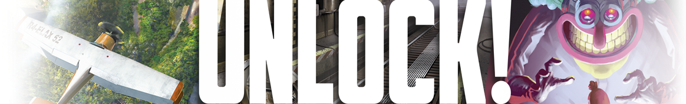

Toutes les régles du jeux unlock sont disponible ici
Pour jouer a unlock vous avez besoin :
Bonus: Unlock peut se jouer a distance. Non, il n'y a pas d'échappatoire, vous devez rester confiné.(Satisvar 2020)
Solutions:
- Vous pouvez utiliser le partage d'écran disponible sur les logiciels de visioconférence ( zoom, skype, teams...)
- Vous pouvez téléphonner en même temps que jouer, par contre chaccun devra gérer ces cartes indépendamment
Comment utiliser le site:
Une fois la mission selectionné, vous aurez cette page:
- Vous avez une page de présentation (tutoriel), vous pouvez ranger la carte dés que vous le souhaitez.
- Vous avez le bureau ou il faut sortir. Notez les numéros que vous optenez en bas de l'écran. Ceux ci s'ajouterons automatiquement a votre liste.
Amusez vous bien!